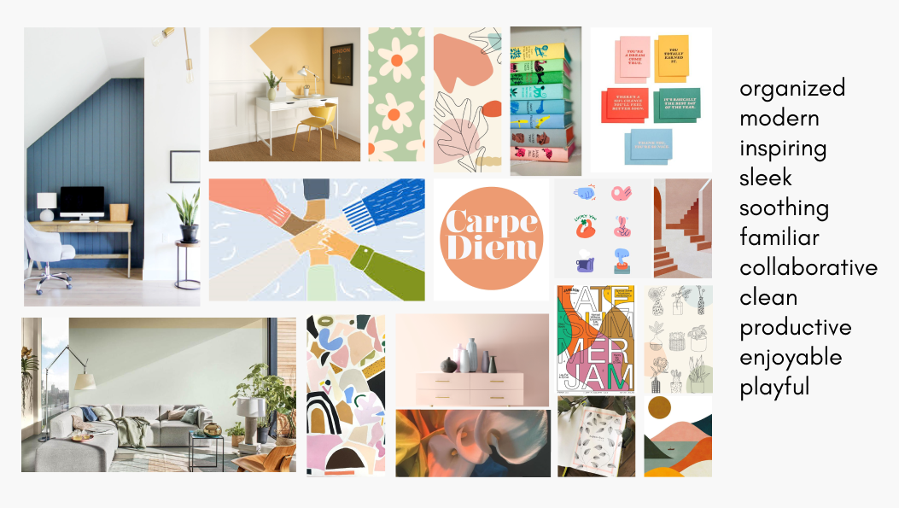

Rutina
Facilitating routine and connection through social and productivity features
Overview
Rutina is an app dedicated to facilitating routine and connection through social and productivity features. At our core, we are a to-do list. Users can establish routine through the completion of tasks and organized lists, something that users noted was lacking in quarantine.
Objective
Conduct user research and develop an application on the topic, HOME ISOLATION: How might we support the millions of people stuck at home due to the COVID-19 quarantine?
The COVID-19 pandemic has created a situation unprecedented in the history of the human race. Never before has such a high-percentage of the world’s population been isolated in their homes. At the same time, the internet has enabled many to continue to connect for work and play. For many others, the situation has led to stress and uncertainty. Understanding and addressing these challenges not only helps people in the current situation, but could help society prepare for future crises.
Secondary Research
Our team began our research phase by conducting secondary research and online community observations where members discuss their situation isolating at home. From our findings, we saw an increase in the need for mental health support.
What we know:
- Contagion concerns can worsen anxiety and ‘contamination obsessions’ for those with obsessive/compulsive issues
- Ultimate consequence to uptick in mental health issues due to this crisis: rise in self-harm/suicide
- Disruption to routine, sleep disturbances, cutoff of social contact seen to negatively impact individuals’ health
- Social isolation and uncertain times can cause mental health to worsen, or disorders to return
- Humans are social creatures who thrive on contact with others
Online Observation on Communities such as: reddit, mental health message boards/forums, facebook groups, etc.

Many people have posted similar anecdotes to reddit pages (threads such as r/living-alone, etc.), detailing their experiences in isolation. Many, like this reddit user, expressed sentiments of guilt for unproductivity as well as their wishes for coping mechanisms, specifically methods of warding off negative, unwanted thoughts (stemming from whatever: general anxiety/depression, restlessness, boredom, and loneliness).
User Research
The team then created an online questionnaire for individuals who have adapted to home isolation to find opportunities for an application. Through this questionnaire, we aimed to gather information regarding how people are handling social isolation in the context of mental health. We wanted to learn about the resources people are using to cope, and how this affects their daily activities and mindset.

Questionnaire Results: 101 Responses, 68 Isolating Alone
Main Demographics:
- Mainly 19-25, and 26-40yr olds responded
- Half identified as female
- Half working from home
Quantitative Data
- People have varied levels of contentment, with the majority 53/101, with mostly negative experiences (5 or below rating).
- These ratings are relative, but can help us see the overall attitude
- 26/101 people have a notably negative experience (3 or below rating)
- Those who rated it very positive (8+ rating) noted they had been working on self improvement and focusing on themselves
- Majority of people have found their mental health to be worsening during this time, they have indicated this to be due to changes in routine and an abrupt change to their access to their support systems
- Those who have found their mental health to be improving note it is due to being able to dedicate more time to themselves and focusing on creating a schedule and expectations for themselves
- A majority of people,50, have found that quarantine has affected the way they connect with their support systems, with mostly, 28, connecting more frequently
- Some have indicated they have trouble connecting with their loved ones due to lack of motivation or distaste for the lack of physical touch
- Those who are connecting more frequently have been reaching out for mutual support and to obtain the human interaction they cannot obtain physically

Takeaway:

Takeaway:
Notable Quotes
Yes, worsening - “Not being able to physically spend time with people is hard, I can’t go out and about to some activities like thrifting that I do when I’m feeling out of sorts. I think a lot of my friends are also overwhelmed dealing with everything so it’s been harder to lean on them for support.”
Yes, Improving - “During quarantine, I have focused on consistency with goal setting and continuing/improving healthy habits.”

Takeaway:
Notable Quotes
“Losing routine, fear of the unknown, fear of health concerns, losing normalcy, losing some aspects of self care”
“Loss of structure, loneliness, lack of in person connection”
User Research Interviews
Each team member interviewed one participant each with a primary focus on mental health (and subsequent protection/improvement of mental health in a time of isolation).
Interviewee 1: Working from home and prefers this lifestyle, giving him flexibility and comfort. However, isolation also deteriorates his mental health sometimes.
Overall, this interviewee has seen the benefits and drawbacks to quarantine isolation, thus he feels that his mental health is quite balanced out. Whenever he is feeling low he makes sure to reach out to people via phone calls, texts or social media. Obviously he would prefer physical social interaction but he keeps trying to make the most of the situation.
Danielle (Interviewee 2): Main concerns during self-isolation was a lack of social interaction with friends and loneliness
Overall, Danielle's daily routine is not very structured which makes her less productive, which then in turn stresses her out even more. She finds time to do things she enjoys, like play her ukelele and Facetimes sometimes, but overall, she doesn’t feel like there is enough social interaction. Her quarantine experience has, all in all, been rather negative due to her loneliness.
Jerry (Interviewee 3): Recently unemployed and hasn’t been able to socialize as much due to isolation/ not being able to go to work
Overall, his monotonous lifestyle and lack of social interaction has made him feel more lonely. His method for reaching out to friends has been unsuccessful and their lack of engagement has increased his desires for other solutions for socializing.
Diana (Interviewee 4): Recently unemployed and isolating alone, Diana has no structure to her day, feels like everyday is blending together
Overall, Diana is struggling because of the monotony of everyday life currently. Her days lack a consistent schedule she can look to in order to remain motivated and productive. Reached out to friends at first, but has fallen off due to her mental health and lack of motivation.
Annie (Interviewee 5): Annie had recently been isolating alone, she sets deadlines with which to keep in touch in friends, makes it easier to keep track of. Tries to study ‘with friends’ and video calls them just to see their face and find comfort in that
Overall, Tries her best to keep herself busy so she doesn’t think about being lonely and actively tries to talk to as many people as possible (calling people a lot more than pre-quarantine and she thrives on Zoom breakout room contact). Routine is integral to daily life.
Notable Quote: “I think I would’ve gone crazy if I didn’t actively try to distract myself… I would jump to talking to people (in Zoom breakout rooms) because I was so sick of being alone.”
From our interview results, the majority of interviewees agreed that there was a decline in their mental health due to a lack of socialization and routine. However, those who have focused on continuing to improve themselves, continue health habits and consistency, have found their mental health to be improving.
Persona
Based on insights from the team user research thus far, we created two personas to illustrate the archetype stakeholders.
The first persona is the primary stakeholder who is isolating alone and is frustrated due to his disconnect from his friends and family. The second persona is the secondary stakeholder who interacts with the primary stakeholder as his sister, seeking more time to connect with her brother.
Problem Statement
Through our research, we found people mental health to be suffering during self isolation due to the interruption of routines. This led to lack of motivation and a need for support systems. Our mission is to develop a program to motivate people to maintain productivity; employing a social aspect as the incentive to get people to accomplish their goals.
So, how might we help those who experience worsening mental health symptoms due to the absence of routine and productivity in their lives?
Competitive Analysis
The team created a competitive analysis to help us distinguish our potential competitive advantage by comparing our idea to five other productivity apps by features, incentives, interactivity, and critical pain points.
There are a lot of different, creative approaches to incentivizing productivity across the App Store; mostly having to do with game-ifying the idea of being productive. The versatility of many of the apps that we researched came from the absence of an actual in-app task list-- the apps were meant to be used in conjunction with whatever the user had in mind to accomplish, but there often seems to be no space in the apps to organize these goals. Thus, we propose an integration of an organizational checklist feature into our productivity app, and we will be incentivizing users to be productive by mimicking a social media platform. Our competitive advantage lies in the social aspect, which seems to be lacking from other productivity apps: our users can collaborate with friends on tasks while being able to keep in touch with their friends in a unique way.
Sketches
After creating our competitive analysis, the team began to write out a list of key functions for our mobile system based on the support needed from our research. Each team member then created sketches for the user interface with the focus of creating a social incentive: feed showing other’s tasks and lists, compare lists with friends.

All five team members presented their version of the application to the group for discussion. We then reviewed which aspects of the sketches we liked and the features that communicated our content the strongest, which would then be used to merge our core functionality into one.
Lo-fi Prototype
Building on our sketches, our team collaborated on Balsamiq to create our lo-fi prototype to consturct our main interactivity and illustrate how the user would move between each screen.

Once we evolved this idea of incentivizing productivity between friends, we prototyped our ‘activity feeds’ (where you could see what friends had accomplished or added to their to-do lists) with personal organization templates, allowing users to have a maintain a virtual to-do list and share it with others.
User Testing
To test our lo-fi prototypes, we created a list of tasks for users to complete and a list of interview questions to capture their thoughts on and experience with the prototype. We gave each tester specific directions to plan their tasks for the day with the prototype.
Takeaways
Each team member was able to test our lo-fi prototype with one user. Our main critique stems from the need to differentiate our app from other productivity apps such as implementing a closer interaction feature, this can take the form of competitions between users. We were also suggested to condense the navigation options in order to provide a cleaner and more straightforward experience for the users. The tasks page needed to be intuitive and easy to navigate since it is the main feature of the app, we can do this by labeling buttons and making it flow better. We also needed to discuss how to manage privacy by implementing an option to lock certain tasks so that they’re only visible to the main user.
MoodBoard
Drawing inspiration from our user research and personas, our team created a moodboard to capture the essence, mood, and color composition of the emotional experience we wanted to create with our app.

We wanted to find a balance between clean and sleek design, while maintaining a familiar and playful vibe. Emphasizing productivity and collaboration, we wanted the app to be familiar and inspiring.
Style Guide
Based on our moodboard, the team created a style guide with specification that shows our choices for colors, typefaces, and design elements.
To maintain the clean and sleek design we were looking for, we opted for sans-serif text throughout and boxes with rounded edges. (& Drop shadow was used sparingly so things looked dynamic and not flat, but without being too overwhelming) We used blobs of color in the background of many pages to capture a inviting and playful feeling. For our color palette, we wanted to contrast our softer colors with strong pops of teal and yellow throughout the app
High Fidelity Prototype
Following our style guide and using the feedback from our previous user testing, the team and I created a high fidelity prototype of our app, Rutina.

Seeing friends complete tasks and be productive will hopefully inspire users to do the same. We see this as a way for friends separated by distance to hold each other accountable to their responsibilities. Additionally, we are combining some ideas of our competitors, such as implementing achievements, reminders/notifications, and usage stats. This will allow our users to use the app to keep track of all their responsibilities, while providing them with valuable feedback on their productivity habits to allow them to make changes if necessary.
Hi-Fi Prototype User Testing
Before finalizing the interface, the team conducted a second round of user testing with six users to provide us with feedback on the prototype’s usability and whether users found it purposeful. The users were given specific directions to plan their tasks and see what progress their friends have made in their tasks.
The overall consensus was that the prototype was intuitive to use and it would be practical to have, especially the collaborative features which would make task projects with peers easier. Although there were minor difficulties due to some connection errors within the prototype, most users were able to complete each task. At times, users felt overwhelmed by the app, so our team decided to make small changes such as reducing drop shadow, colors, and overall simplifying aspects of the design to ease users.
Final Hi-Fi Prototype
This is our finalized prototype after iterating and refining our figma prototype, guided from our user testing feedback.

check out the final prototype -> here
Conclusion
Through this project, I was able to utilize my design experience from my previous class and apply them here to develop Rutina. I was able to delve deeper into user research and learn more about user centered design through new design tools and techniques. With more time, I would have liked to continue developing other scenarios by being able to add other tasks and complete a third round of user testing with the finalized updates.
 Contact ->
Contact ->